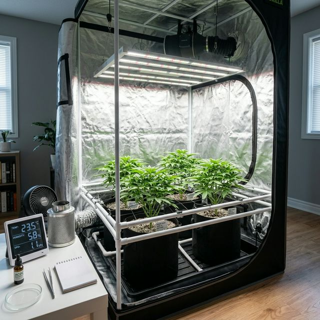

Autocultivo Medicinal e Habeas Corpus

O autocultivo medicinal é a expressão máxima da autonomia do paciente. Além de garantir a pureza do seu remédio, ele reduz drasticamente os custos a longo prazo. No entanto, cultivar uma planta com fins fitofármacos exige rigor técnico e planejamento.
1. Planejamento do Espaço (Grow)
Seja em uma estufa indoor ou em um jardim outdoor, a planta de Cannabis exige controle de três variáveis críticas:
- Luz: Ciclo de 18/6 (Vegetativo) e 12/12 (Floração). Recomendamos LEDs de espectro total para eficiência energética e menor calor.
- Ventilação: Troca de ar constante para evitar fungos e fortalecer os caules.
- Umidade: Deve ser alta no início (70%) e reduzida gradualmente até o final da floração (40-50%).
2. Ciclo de Vida e Nutrição (N-P-K)
Sua planta passará por fases distintas, e a alimentação deve mudar para refletir essas necessidades:
| Fase | Foco Nutricional | Proporção (N-P-K) |
|---|---|---|
| Vegetativo | Folhas e Raízes | Alto Nitrogênio (ex: 10-5-7) |
| Floração | Resina e Flores | Fósforo e Potássio (ex: 5-7-10) |
3. Proteção Orgânica (Defensivos)
Como o objetivo é o consumo medicinal, nunca use agrotóxicos químicos. O controle de pragas deve ser biológico:
- Óleo de Neem: Repelente natural sistêmico. Aplicar preventivamente a cada 10 dias no vegetativo.
- Sabão de Potássio: Excelente para combater pulgões e moscas brancas de forma segura.
- Manejo Integrado (IPM): Mantenha o ambiente limpo e use armadilhas adesivas amarelas para monitoramento.
4. Domínio Técnico: Produzindo em Grau Farmacêutico
O acompanhamento rigoroso do cultivo não é apenas burocracia; é o que separa um plantio amador de uma produção de Grau Farmacêutico. Para o paciente, dominar essas variáveis prova sua capacidade de produzir o próprio remédio com estabilidade e segurança.
Autonomia e Padronização:
- Estabilidade Terapêutica: Garantir que cada colheita entregue a mesma concentração de canabinoides.
- Soberania do Paciente: Provar tecnicamente que seu setup é capaz de suprir sua demanda medicinal sem depender de terceiros.
- Rastreabilidade para Associações: Para entidades que atendem vários pacientes, o controle por lotes é a exigência da ANVISA para garantir a padronização do produto final.
5. Da Planta ao Remédio: Extração de Precisão
O objetivo final é a soberania medicinal. Produzir seu próprio óleo (RSHO) exige métodos que preservem o perfil terpênico e a potência prescrita:
- Decarboxilação Controlada: O passo vital para ativar os compostos medicinais (CBD/THC) através do calor preciso.
- Extração por Infusão: Uso de solventes lipídicos (Azeite ou MCT) para um remédio limpo e seguro para ingestão.
- Controle de Pureza: A anotação de cada etapa garante que você possa replicar o sucesso da sua melhor extração.
Domine a técnica para garantir que sua medicina seja sempre segura, potente e constante.
O Efeito Entourage: Sinergia entre Canabinoides e Terpenos
Aprofunde seu conhecimento científico sobre os compostos que compõem a sua medicina. 13 capítulos com perfis de terpenos, quimiotipos e protocolos de extração.
Ver E-book MasterPrecisa de um Projeto de Cultivo Técnico?
Auxiliamos na montagem do seu setup e na elaboração do laudo técnico de cultivo para o seu advogado. Acesse nosso Guia Avançado de Cultivo para aprofundar seus conhecimentos técnicos.
Consultoria Técnica